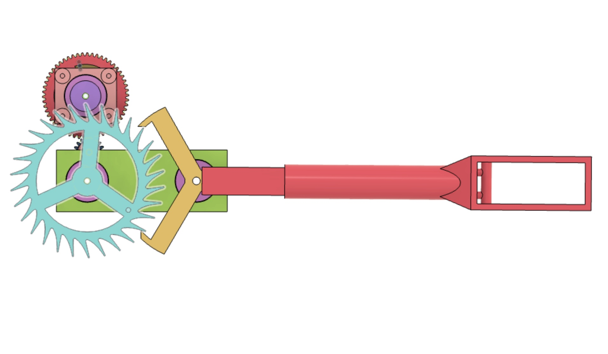
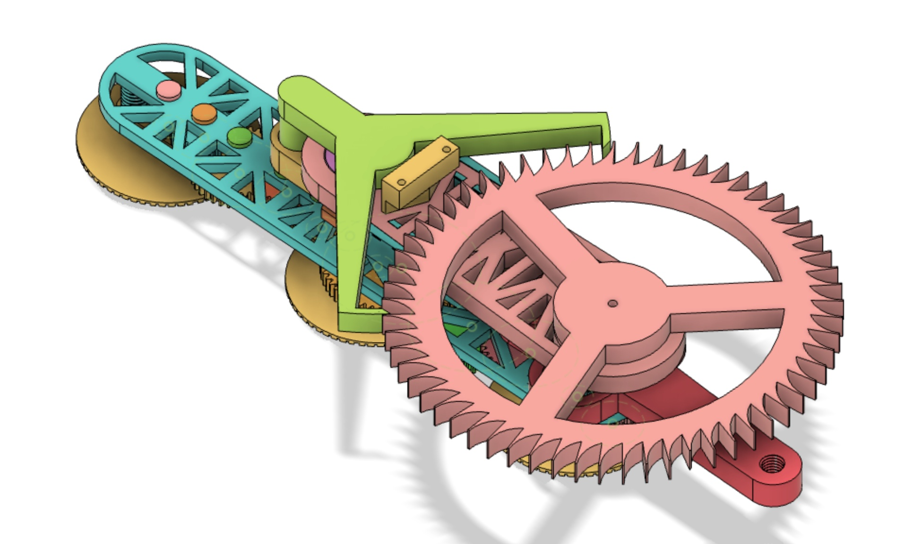
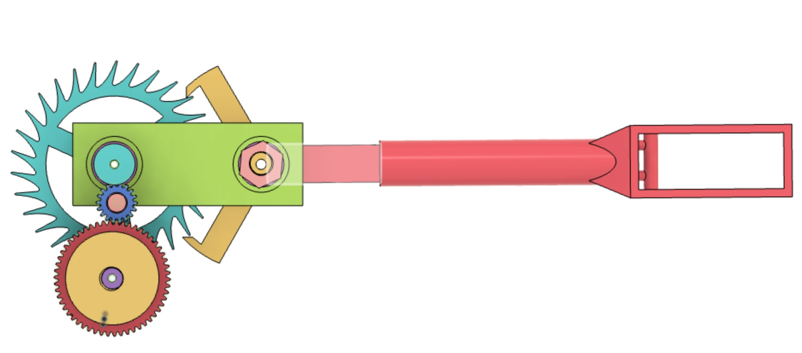
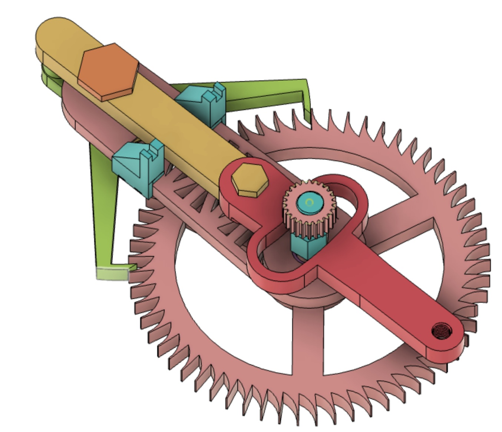
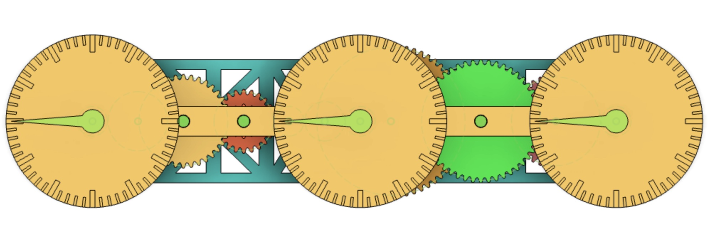
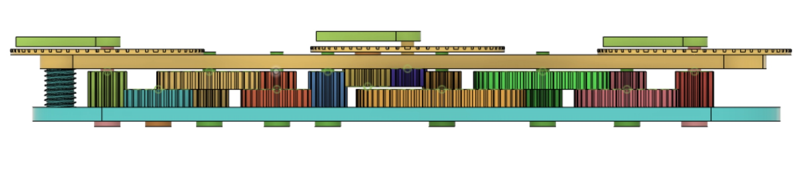

Pendulum Clock Escapement
Completed Pendulum Graham Clock Escapement (Version 2)
I've always have been interested in mechanical designs. So when I had to the opportunity to create
a time measurement device for the Science Olympiad—It's About Time event, I challenged myself
to create a clock escapement mechanism. More specifically, I created a Graham clock escapement
for both of the clock designs below.
Version 1

Completed Pendulum Graham Clock Escapement (Version 1)
This is the first clock escapement that I've ever made. It was the version that I used to compete in the
Science Olympiad—It's About Time competition. Because of the nature of the competition, the relatively short
runtime of the escapement didn't matter too much to the competition (and therefore wasn't considered an
issue at the time. However, it isn't an ideal for a normal clock).
Version 2
After the competition, I challenged myself to make improvements to my mechanism. I first addressed the short
runtime by a) making a bigger escapement so that each advancement of the escapement unspools less of the weights,
b) make the pendulum extendable by spliting it up into sections (and the middle section can have more or less subsections
to have a longer or shorter pendulum), and c) added a clock face to know exactly how much time went by.

Completed Pendulum Graham Clock Escapement (Version 2)
Skills and Tools Used
- Fusion 360: CAD Software
- Sovol SV01 (Original) 3D Printer
- A direct-drive extruder printer with a glass bed surface
- PLA plastic were used for the entire print
- Knowledge of Clock Design
-
I learned about clock escapement designs and the math behind them so that I can recreate it on my own.
Whether it was from a YouTube video, a textbook I found online, or an article, I used as many resources
as I possible could find to design both clock escapement designs.
1 / 7

Clock Escapement Mechanism V1 (Back)
2 / 7

Clock Escapement Mechanism V2
3 / 7
Clock Escapement Mechanism V2
4 / 7
Clock Escapement Mechanism V2
6 / 7

Clock Face Front
7 / 7

Clock Face (Side View)
❮
❯